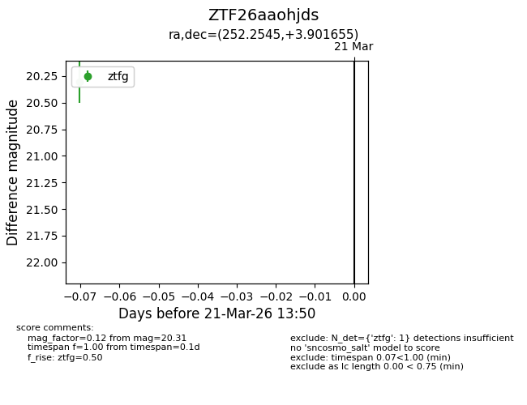
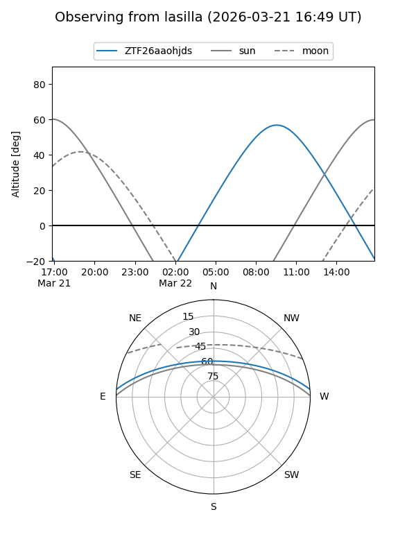
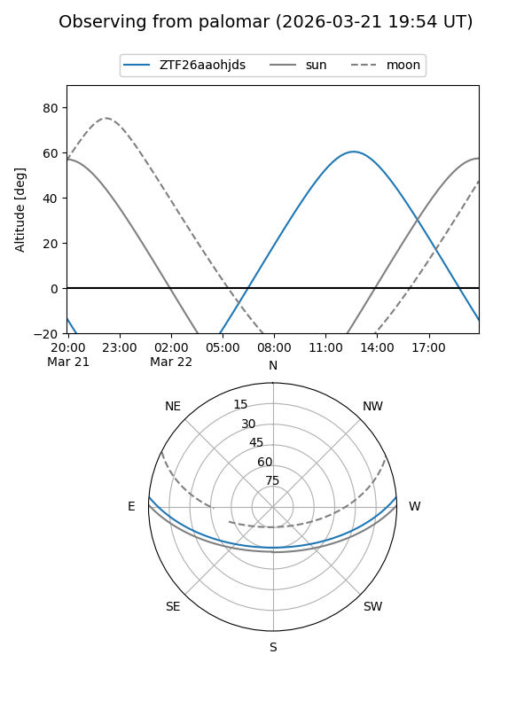

ZTF26aaohjds
Target ZTF26aaohjds at 2026-03-21 13:52
Aliases and brokers:
FINK: link
Lasair: link
ALeRCE: link
alt names
ZTF26aaohjds (ztf,fink_ztf)
Coordinates:
equatorial (ra, dec) = 252.2545,+3.90166
equatorial (HMS+DMS) = 16:49:01.09,+03:54:05.96
galactic (l, b) = (21.6662,+28.88701)
Flags:
Photometry:
last ztfg=20.31
1 ztfg detections
Lightcurve

Visibility


Additional plots